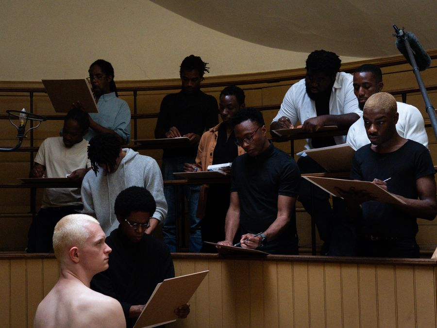

a figuração branca é um novo gênero da pintura inventado em 2020 com a série Clube, na favela da Rocinha, no Rio de Janeiro, Brasil.


a figuração branca é um novo gênero da pintura inventado em 2020 com a série Clube, na favela da Rocinha, no Rio de Janeiro, Brasil.
toda inventividade que a série Clube propõe, não está baseada somente em um ponto, é uma soma de intenção, com análise histórica e consciência do próprio tempo e suas implicações.
o que nomeei “figuração branca” é o que hoje vocês chamam apenas de figuração.

“pintor preto, figuração branca” gera um contraste explícito que faz nascer, na pintura, a raça da figura branca. somente um autor racializado tem o poder de conferir raça. pintor preto, figuração branca é uma afirmação que nos ajuda a revelar uma posição. não é mais o pintor branco tradicional pintando o corpo branco, seus pares, amigos, familiares, grupo social, etc. agora é o pintor… acesse os prints disponíveis